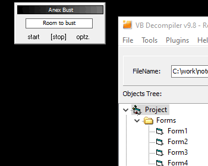
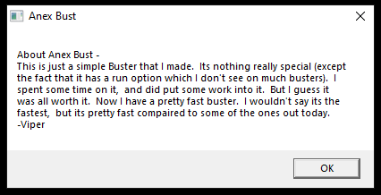
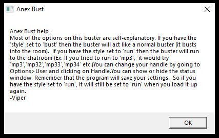
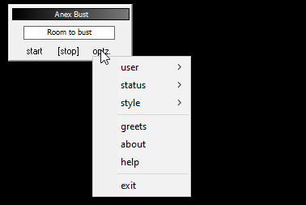
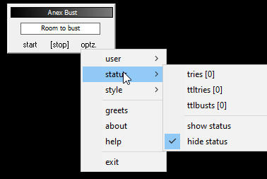
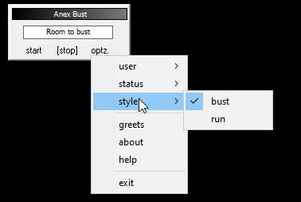
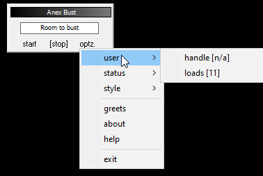

Anex Bust
AOL 4.0
VB6
Native Code
anexbust.exe
Compiled 2002-01-22
modAnexBust.bas

Main window

Navigation walkthrough
Individual screenshots

About

Help

Menu

Submenu Status

Submenu Style

Submenu User
🖊 Author Evidence (1)
📦 Dependencies (4)
VB Runtime
MSVBVM60.DLL
VBA6.DLL
System DLLs
shell32.dll
winmm.dll
📋 Project Info
Startup: Form1 · Version: 1.00.0
🤝 Greets & Shoutouts
And anyone else I foregot.
⚙ API References (8)
AOL Window Classes
AOL Child 4.0+
AOL Frame 4.0+
AOL Frame25 2.5–3.0
_AOL_Icon 2.5+
_AOL_Listbox 2.5+
_AOL_Static 2.5+
MDIClient 2.5+
RICHCNTL 2.5+
🖼 Forms & Controls
4 forms, 18 controls
Form1
| Type | Name | Caption/Text |
|---|---|---|
| TextBox | txtRoom | Room to bust |
| PictureBox | Picture1 | ey | 1 |
| Label | lblOptz | optz. |
| Label | lblStop | [stop] |
| Label | lblStart | start |
Form2
| Type | Name | Caption/Text |
|---|---|---|
| Label | lblTries | 0 |
| Label | lblttlBusts | 0 |
| Label | lblttlTries | 0 |
| Label | lblLoads | 0 |
| Label | lblHandle | n/a |
Menu:
frmGreets
| Type | Name | Caption/Text |
|---|---|---|
| PictureBox | Picture1 | ey | 1 |
| Label | Label2 | x |
| Label | Label1 | Tries: 0 |
Timers: Timer2, Timer1
frmStats
| Type | Name | Caption/Text |
|---|---|---|
| Label | Label3 | Total Busts: 0 |
| Label | Label2 | Total Tries: 0 |
| Label | Label1 | Tries: 0 |
📊 Code Breakdown
Custom code — 25 funcs (46.0%)
Cherry-picked from dos32.bas — 8 funcs (22.9%)
Used from modAnexBust.bas — 1 of 12 funcs (24.0%)
Unused from modAnexBust.bas — 3 funcs (7.1%)
Application Code (25 event handlers)
Form_Load() 5.2KB → calls: modAnexBust.Proc_2_10, WriteToINI, FileExists, GetFromINI
Private Sub Form_Load() Dim app_1 As App Dim app_2 As App app_1 = Global.App local_18 = Global.Path local_1C = local_18 & "\anexbust.dat" call FileExists(local_1C, 0, app_1) If call FileExists(local_1C, 0, app_1) + 1 = 0 Then ... app_1 = Global.App local_18 = Global.Path local_28 = local_18 & "\anexbust.dat" call WriteToINI("data", "loads", &h00404AEC) GoTo ... app_1 = Global.App local_18 = Global.Path local_24 = local_18 & "\anexbust.dat" local_20 = "handle" local_1C = "data" local_28 = call GetFromINI(local_1C, local_20, local_24) app_1 = Global.App local_18 = Global.Path local_24 = local_18 & "\anexbust.dat" local_20 = "handle" local_1C = "data" local_28 = call GetFromINI(local_1C, local_20, local_24) call modAnexBust.Proc_2_10(local_28, , ) If (local_2C = vbNullString) + 1 = 0 Then ... app_1 = Global.App local_18 = Global.Path local_24 = local_18 & "\anexbust.dat" local_20 = "loads" local_1C = "data" local_28 = call GetFromINI(local_1C, local_20, local_24) app_2 = Global.App local_1C = Global.Path local_2C = local_1C & "\anexbust.dat" call WriteToINI("data", "loads", __vbaStrR8) app_1 = Global.App local_18 = Global.Path local_24 = local_18 & "\anexbust.dat" local_20 = "ttltries" local_1C = "data" local_28 = call GetFromINI(local_1C, local_20, local_24) app_1 = Global.App local_18 = Global.Path local_24 = local_18 & "\anexbust.dat" local_20 = "ttlbusts" local_1C = "data" local_28 = call GetFromINI(local_1C, local_20, local_24) app_1 = Global.App local_18 = Global.Path local_24 = local_18 & "\anexbust.dat" local_20 = "style" local_1C = "data" local_28 = call GetFromINI(local_1C, local_20, local_24) GoTo ... If si = 0 Then ... options_style_bust.Checked = True options_style_run.Checked = False If Me >= 0 Then ... GoTo ... options_style_bust.Checked = False options_style_run.Checked = True If Me >= 0 Then ... app_1 = Global.App local_18 = Global.Path local_24 = local_18 & "\anexbust.dat" local_20 = "showstat" local_1C = "data" local_28 = call GetFromINI(local_1C, local_20, local_24) GoTo ... If &h0041005C = 0 Then ... frmStats.Hide options_status_show.Checked = False options_status_hide.Checked = True frmStats.Show options_status_show.Checked = True options_status_hide.Checked = False Exit Sub Exit Sub End Sub
Form_Unload(Cancel 2.3KB → calls: WriteToINI
Private Sub Form_Unload(Cancel As Integer) Dim app_1 As App Dim local_30 As Variant app_1 = Global.App local_1C = Global.Path local_2C = local_1C & "\anexbust.dat" call WriteToINI("data", "handle", local_18) app_1 = Global.App local_1C = Global.Path local_2C = local_1C & "\anexbust.dat" call __vbaStrR8(local_40, local_3C, local_30, local_18, local_30, app_1, Me) call WriteToINI("data", "ttltries", __vbaStrR8(local_40, local_3C, local_30, local_18, local_30, app_1, Me)) app_1 = Global.App local_1C = Global.Path local_2C = local_1C & "\anexbust.dat" call __vbaStrR8(local_40, local_3C, Me, local_18, local_30, Me, Me) call WriteToINI("data", "ttlbusts", __vbaStrR8(local_40, local_3C, Me, local_18, local_30, Me, Me)) local_38 = options_style_bust.Checked If &h004105C0 = 0 Then ... local_30 = Global.App local_18 = Global.Path local_28 = local_18 & "\anexbust.dat" GoTo ... local_30 = Global.App local_18 = Global.Path local_28 = local_18 & "\anexbust.dat" call WriteToINI("data", "style", &h00404EA8) local_38 = options_status_show.Checked local_30 = Global.App local_18 = Global.Path local_28 = local_18 & "\anexbust.dat" GoTo ... local_30 = Global.App local_18 = Global.Path local_28 = local_18 & "\anexbust.dat" call WriteToINI("data", "showstat", &h00404EA8) Exit Sub End Sub
Label1_Change() "Tries: 0" 1.5KB
Private Sub Label1_Change() Dim picturebox_1 As PictureBox If local_410000 <> 0 Then ... GoTo ... local_2C = Picture1.Height If local_410000 <> 0 Then ... GoTo ... If local_410000 <> 0 Then ... GoTo ... faddp st1 Exit Sub Exit Sub End Sub
Label2_Click() "Total Tries: 0" 378b
Private Sub Label2_Click() Me.Hide Timer1.Enabled = False Timer2.Enabled = False Exit Sub End Sub
Picture1_MouseDown(Button "ey | 1" 206b
Private Sub Picture1_MouseDown(Button As Integer, Shift As Integer, X As Single, Y As Single) If Button <> 1 Then ... End Sub
Picture1_MouseMove(Button "ey | 1" 821b
Private Sub Picture1_MouseMove(Button As Integer, Shift As Integer, X As Single, Y As Single) If Button <> 1 Then ... local_18 = Me.Left Me.Left = local_18 local_18 = Me.Top Me.Top = Me local_18 = frmGreets.Left frmGreets.Left = local_18 local_1C = frmGreets.Height local_18 = frmGreets.Top frmGreets.Top = local_18 local_18 = frmStats.Left frmStats.Left = local_18 local_1C = frmStats.Height local_18 = frmStats.Top frmStats.Top = local_18 End Sub
Timer1_Timer() 863b
Private Sub Timer1_Timer() Timer1.Enabled = False Timer2.Enabled = True GoTo ... esi+&h00000034 = esi+&h00000034 + 0004h If esi+&h00000034 <= 255 Then ... local_34 = %x1 = Label1.Standing local_40 = %x1 = Label1.Standing local_4C = %x1 = Label1.Standing Exit Sub Exit Sub End Sub
Timer2_Timer() 7.4KB
Private Sub Timer2_Timer() Dim local_1C As Variant If (local_18 = "Greets to...") + 1 = 0 Then ... GoTo ... If (local_18 = "Toxic") + 1 = 0 Then ... GoTo ... If (local_18 = "ryze") + 1 = 0 Then ... GoTo ... If (local_18 = "riptide") + 1 = 0 Then ... GoTo ... If (local_18 = "crims0n") + 1 = 0 Then ... GoTo ... If (local_18 = "Diamond Dawg") + 1 = 0 Then ... GoTo ... If (local_18 = "stanky") + 1 = 0 Then ... GoTo ... If (local_18 = "d0tz") + 1 = 0 Then ... GoTo ... If (local_18 = "tetra") + 1 = 0 Then ... GoTo ... If (local_18 = "pio") + 1 = 0 Then ... GoTo ... If (local_18 = "pyro") + 1 = 0 Then ... GoTo ... If (local_18 = "notorious") + 1 = 0 Then ... GoTo ... If (local_18 = "dlux") + 1 = 0 Then ... GoTo ... If (local_18 = "bone (auoq)") + 1 = 0 Then ... GoTo ... If (local_18 = "sober") + 1 = 0 Then ... Timer1.Enabled = True Timer2.Enabled = False esi+&h00000034 = esi+&h00000034 - 0004h If esi+&h00000034 >= 0 Then ... local_38 = %x1 = Label1.Standing local_44 = %x1 = Label1.Standing local_50 = %x1 = Label1.Standing GoTo ... call local_1C(local_1C, (vtable), local_0040F166, local_1C, RGB(CInt((local_58 * 2.5)), CInt((local_40 * 2.5)), Me), local_1C, local_1C, Me, local_1C, (vtable), Me, Me, "And anyone else I foregot.", local_1C, Me) If (local_18 = "And anyone else I foregot.") + 1 = 0 Then ... call local_1C(local_1C, (local_18 = "And anyone else I foregot."), Me, local_1C(local_1C, (vtable), local_0040F166, local_1C, RGB(CInt((local_58 * 2.5)), CInt((local_40 * 2.5)), Me), local_1C, local_1C, Me, local_1C, (vtable), Me, Me, "And anyone else I foregot.", local_1C, Me), local_18) Timer1.Enabled = False call local_1C(local_1C, local_1C(local_1C, (local_18 = "And anyone else I foregot."), Me, local_1C(local_1C, (vtable), local_0040F166, local_1C, RGB(CInt((local_58 * 2.5)), CInt((local_40 * 2.5)), Me), local_1C, local_1C, Me, local_1C, (vtable), Me, Me, "And anyone else I foregot.", local_1C, Me), local_18), Me) Timer2.Enabled = False Exit Sub Exit Sub End Sub
lblHandle_Change() "n/a" 330b
Private Sub lblHandle_Change() local_20 = "handle [" & local_18 & local_004052AC Exit Sub End Sub
lblLoads_Change() "0" 355b
Private Sub lblLoads_Change() local_24 = & __vbaStrR8 & local_004052AC Exit Sub End Sub
lblOptz_Click() "optz." 446b
Private Sub lblOptz_Click() local_9C = local_28 Exit Sub Exit Sub End Sub
lblStop_Click() "[stop]" 1.5KB → calls: SetText
Private Sub lblStop_Click() If Me.Reset <> local_FFFFFF Then ... local_18 = "</u></i><font color=#000000><font face=""Arial Narrow""><sup>�</sup>�-<sub>�</sub> < a href=www.anexsoft.com><font color=#000000></u><b>A</b><font color=#666666>nex Bust</a> <font color=#000000>� <b>B</b><font color=#666666>y <font color=#000000><b>V</b><font color=#666666>iper" call SetText(local_18, local_3C, "[stop]") call Proc_40D770(0.6, local_3C, (vtable)) local_20 = txtRoom.Text local_1C = "</u></i><font color=#000000><font face=""Arial Narrow""><sup>�</sup>�-<sub>�</sub> <font color=#000000></u></i><b>" & local_18 local_30 = local_1C & "</b> � <font color=#000000></u><b>S</b><font color=#666666>topped <font color=#000000>[<b>" & local_20 & "</b>] � <b>T</b><font color=#666666>ries <font color=#000000>[<b>" call SetText(local_30 & local_2C & "</b>]", local_00410034, local_2C) txtRoom.Enabled = True Exit Sub End Sub
lblTries_Change() "0" 580b
Private Sub lblTries_Change() local_38 = local_2C local_20 = & __vbaStrR8 local_24 = & __vbaStrR8 & local_004052AC Exit Sub End Sub
lblttlBusts_Change() "0" 583b
Private Sub lblttlBusts_Change() local_38 = local_2C local_20 = & __vbaStrR8 local_24 = & __vbaStrR8 & local_004052AC Exit Sub End Sub
lblttlTries_Change() "0" 583b
Private Sub lblttlTries_Change() local_38 = local_2C local_20 = & __vbaStrR8 local_24 = & __vbaStrR8 & local_004052AC Exit Sub End Sub
options_about_Click() 671b
Private Sub options_about_Click() local_20 = "About Anex Bust -" & "vbCrLf" & "This is just a simple Buster that I made. Its nothing really special (except the fact that it has a run option which I don't see on much busters). I spent some time on it, and did put some work into it. But I guess it was all worth it. Now I have a pretty fast buster. I wouldn't say its the fastest, but its pretty fast compaired to some of the ones out today." local_34 = "Anex Bust" local_5C = local_20 & "vbCrLf" & "-Viper" Exit Sub End Sub
options_exit_Click() 338b
Private Sub options_exit_Click() Set local_18 = local_00410010 var_eax = Global.Unload local_18 Set local_18 = Me var_eax = Global.Unload local_18 End Exit Sub End Sub
options_greets_Click() 248b
Private Sub options_greets_Click() frmGreets.Show frmGreets.Timer1.Enabled = True Exit Sub End Sub
options_help_Click() 967b
Private Sub options_help_Click() local_20 = "Anex Bust help -" & "vbCrLf" & "Most of the options on this buster are self-explanatory. If you have the 'style' set to 'bust' then the buster will act like a normal buster (it busts into the room). If you have the style set to 'run' then the buster will run to the chatroom (Ex. If you tried to run to 'mp3', it would try 'mp3','mp32','mp33','mp34' etc.)" local_28 = local_20 & "You can change your handle by going to Options>User and clicking on Handle." & "You can show or hide the status window." local_2C = local_28 & " Remember that the program will save your settings. So if you have the style set to 'run', it will still be set to 'run' when you load it up again." local_40 = "Anex Bust" local_68 = local_2C & "vbCrLf" & "-Viper" Exit Sub End Sub
options_stats_handle_Click() 1.1KB → calls: modAnexBust.Proc_2_10
Private Sub options_stats_handle_Click()
local_4C = local_20
local_18 = InputBox("Enter your handle", local_44, local_20, local_64, local_74, 10, 10)
local_1C = local_18
call modAnexBust.Proc_2_10(local_18, local_24, local_20)
VarPtr(local_18) + 1
If VarPtr(local_18) + 1 = 0 Then ...
GoTo ...
Exit Sub
End Sub
options_status_hide_Click() 470b
Private Sub options_status_hide_Click() local_1C = options_status_hide.Checked options_status_show.Checked = False options_status_hide.Checked = True frmStats.Hide Exit Sub End Sub
options_status_show_Click() 477b
Private Sub options_status_show_Click() local_3C = options_status_show.Checked options_status_hide.Checked = False options_status_show.Checked = True frmStats.Show Exit Sub End Sub
options_style_bust_Click() 425b
Private Sub options_style_bust_Click() local_1C = options_style_bust.Checked options_style_run.Checked = False options_style_bust.Checked = True Exit Sub End Sub
options_style_run_Click() 423b
Private Sub options_style_run_Click() local_1C = options_style_run.Checked options_style_bust.Checked = False options_style_run.Checked = True Exit Sub End Sub
txtRoom_KeyPress(KeyAscii "Room to bust" 217b
Private Sub txtRoom_KeyPress(KeyAscii As Integer) If KeyAscii <> 13 Then ... var_eax = Call Form1.lblStart_Click End Sub
Cherry-Picked Code (8 functions cherry-picked)
From dos32.bas (8 functions):
GetFromINI() 100% match · 914b
Public Function GetFromINI(Section As String, Key As String, Directory As String) As String Dim strBuffer As String strBuffer = String(750, Chr(0)) Key$ = LCase$(Key$) GetFromINI$ = Left(strBuffer, GetPrivateProfileString(Section$, ByVal Key$, "", strBuffer, Len(strBuffer), Directory$))
WriteToINI() 100% match · 329b
Public Sub WriteToINI(Section As String, Key As String, KeyValue As String, Directory As String)
Call WritePrivateProfileString(Section$, UCase$(Key$), KeyValue$, Directory$)
FileExists() 100% match · 309b
Public Function FileExists(sFileName As String) As Boolean
If Len(sFileName$) = 0 Then
FileExists = False
Exit Function
End If
If Len(Dir$(sFileName$)) Then
FileExists = True
Else
FileExists = False
End If
GetText() 100% match · 636b
Public Function GetText(WindowHandle As Long) As String
Dim buffer As String, TextLength As Long
TextLength& = SendMessage(WindowHandle&, WM_GETTEXTLENGTH, 0&, 0&)
buffer$ = String(TextLength&, 0&)
Call SendMessageByString(WindowHandle&, WM_GETTEXT, TextLength& + 1, buffer$)
GetText$ = buffer$
FindRoom() 100% match · 2.9KB
Public Function FindRoom() As Long
Dim AOL As Long, MDI As Long, child As Long
Dim Rich As Long, AOLList As Long
Dim AOLIcon As Long, AOLStatic As Long
AOL& = FindWindow("AOL Frame25", vbNullString)
MDI& = FindWindowEx(AOL&, 0&, "MDIClient", vbNullString)
child& = FindWindowEx(MDI&, 0&, "AOL Child", vbNullString)
Rich& = FindWindowEx(child&, 0&, "RICHCNTL", vbNullString)
AOLList& = FindWindowEx(child&, 0&, "_AOL_Listbox", vbNullString)
AOLIcon& = FindWindowEx(child&, 0&, "_AOL_Icon", vbNullString)
AOLStatic& = FindWindowEx(child&, 0&, "_AOL_Static", vbNullString)
If Rich& <> 0& And AOLList& <> 0& And AOLIcon& <> 0& And AOLStatic& <> 0& Then
FindRoom& = child&
Exit Function
Else
Do
child& = FindWindowEx(MDI&, child&, "AOL Child", vbNullString)
Rich& = FindWindowEx(child&, 0&, "RICHCNTL", vbNullString)
AOLList& = FindWindowEx(child&, 0&, "_AOL_Listbox", vbNullString)
AOLIcon& = FindWindowEx(child&, 0&, "_AOL_Icon", vbNullString)
AOLStatic& = FindWindowEx(child&, 0&, "_AOL_Static", vbNullString)
If Rich& <> 0& And AOLList& <> 0& And AOLIcon& <> 0& And AOLStatic& <> 0& Then
FindRoom& = child&
Exit Function
End If
Loop Until child& = 0&
End If
FindRoom& = child&
SetText() 67% match · 1.8KB
Public Sub SetText(Window As Long, Text As String)
Call SendMessageByString(Window&, WM_SETTEXT, 0&, Text$)
ReplaceString() 100% match · 1.9KB
Public Function ReplaceString(MyString As String, ToFind As String, ReplaceWith As String) As String
Dim Spot As Long, NewSpot As Long, LeftString As String
Dim RightString As String, NewString As String
Spot& = InStr(LCase(MyString$), LCase(ToFind))
NewSpot& = Spot&
Do
If NewSpot& > 0& Then
LeftString$ = Left(MyString$, NewSpot& - 1)
If Spot& + Len(ToFind$) <= Len(MyString$) Then
RightString$ = Right(MyString$, Len(MyString$) - NewSpot& - Len(ToFind$) + 1)
Else
RightString = ""
End If
NewString$ = LeftString$ & ReplaceWith$ & RightString$
MyString$ = NewString$
Else
NewString$ = MyString$
End If
Spot& = NewSpot& + Len(ReplaceWith$)
If Spot& > 0 Then
NewSpot& = InStr(Spot&, LCase(MyString$), LCase(ToFind$))
End If
Loop Until NewSpot& < 1
ReplaceString$ = NewString$
IMText() 100% match · 684b
Public Function IMText() As String
Dim Rich As Long
Rich& = FindWindowEx(FindIM&, 0&, "RICHCNTL", vbNullString)
IMText$ = GetText(Rich&)
Used modAnexBust.bas Functions (1 called)
modAnexBust.Proc_2_10() (Proc_2_10_40D660) 461b
Public Sub modAnexBust.Proc_2_10 LCase(Me) local_20 = vbNullString call ReplaceString(Me, local_1C, local_20) call ReplaceString(Me, local_1C, local_20) GoTo ... If local_4 = 0 Then ... Exit Sub End Sub
⭐ Interesting Strings (22)
Room to bust Total Busts: 0 Total Tries: 0 handle [n/a] ttltries [0] ttlbusts [0] [start] America Online <b>A</b><font color=#666666>ctivated <b>D</b><font color=#666666>eactivated \anexbust.dat Total Busts: Total Tries: About Anex Bust - Anex Bust help - This is just a simple Buster that I made. Its nothing really special (except the fact that it has a run option which I don't see on much busters). I spent some time on it, and did put some work into it. But I guess it was all worth it. Now I have a pretty fast buster. I wouldn't say its the fastest, but its pretty fast compaired to some of the ones out today. Most of the options on this buster are self-explanatory. If you have the 'style' set to 'bust' then the buster will act like a normal buster (it busts into the room). If you have the style set to 'run' then the buster will run to the chatroom (Ex. If you tried to run to 'mp3', it would try 'mp3','mp32','mp33','mp34' etc.) You can change your handle by going to Options>User and clicking on Handle. You can show or hide the status window. Remember that the program will save your settings. So if you have the style set to 'run', it will still be set to 'run' when you load it up again. Enter your handle And anyone else I foregot.Other Strings (43)
RtlMoveMemory CloseHandle GetWindowThreadProcessId OpenProcess ReadProcessMemory GetCursorPos GetMenu GetMenuItemCount ShellExecuteA GetMenuItemID GetMenuStringA GetPrivateProfileStringA GetSubMenu GetWindowTextA GetWindowTextLengthA IsWindowVisible mciSendStringA PostMessageA SetCursorPos SetWindowPos sndPlaySoundA ReleaseCapture WritePrivateProfileStringA Tries: 0 loads [0] tries [0] show status hide status Anex Bust <b>B</b><font color=#666666>y <font color=#000000><b>V</b><font color=#666666>iper <font color=#000000> ×2 <font color=#000000></u><b>B</b><font color=#666666>usting <font color=#000000>[<b> aol://2719:2-2- <font color=#000000></u><b>B</b><font color=#666666>usted <font color=#000000>[<b> <b>T</b><font color=#666666>ries <font color=#000000>[<b> <b>B</b><font color=#666666>y <font color=#000000><b>V</b><font color=#666666>iper <font color=#000000></u><b>R</b><font color=#666666>unning <font color=#000000>[<b> <font color=#000000><b>R</b><font color=#666666>an <font color=#000000>[<b> <font color=#000000></u><b>S</b><font color=#666666>topped <font color=#000000>[<b> ScaleWidth RICHCNTL ScaleHeight MDIClient AOL ToolbarTotal unique strings: 370 · Interesting: 22 · Noise filtered: 276